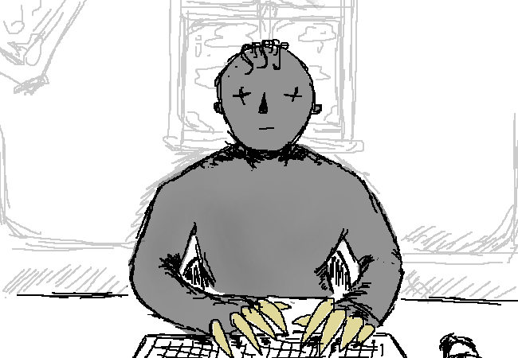

Głos w twojej głowie nakazuje ci się podnieść i uruchomić komputer.
To nic. Tak czy inaczej miałeś to w planach. Uruchamiasz swój zaufany komputer osobisty marki AIDEM MEDIA HARDWARE DIVISION. Zainstalowany na nim system operacyjny został wydany przez AIDEM MEDIA SOFTWARE - jak nietrudno się domyślić, jest to podspółka AIDEM MEDIA.
Włączasz przeglądarkę. Twoje uszy atakuje głośny dżingiel AIDEM MEDIA BROWSER DEVELOPERS SUBSIDIARY. Kto myślał, że dodawanie oprawy dźwiękowej do przeglądarki to dobry pomysł?! Cóż, odpowiedź jest dość prosta: AIDEM MEDIA, czyli gigantyczny konglomerat, który dominuje rynek pod każdym możliwym względem.
Jesteś przekonany, że krzesło na którym siedzisz było wyprodukowane przez firmę, która w swojej nazwie i zarządzie ma AIDEM MEDIA.
Nic w tym dziwnego. W końcu firma z monopolem na MAGIĘ może pozwolić sobie na wszystko.
Wśród twoich zakładek widnieje JEDYNE PRAWDZIWE ŹRÓDŁO RZETELNYCH INFORMACJI, twoja ulubiona (oraz jak sama nazwa wskazuje - jedyna) strona internetowa z wiadomościami. Jej nazwa to dosłownie JEDYNE PRAWDZIWE ŹRÓDŁO RZETELNYCH INFORMACJI. Budzi to w twoim sercu zaufanie, którego nie ośmieliłbyś się kwestionować.
Oprócz informacji o bieżących wydarzeniach z całego świata, twój kiepski, kreci wzrok przykuwa ogrom powiadomień z DISCORDA. To jedna z niewielu aplikacji, która nie została jeszcze wchłonięta przez AIDEM MEDIA ONLINE COMMUNICATION SOFTWARE SUBSIDIARY.
Gdzie się wybierasz, o internauto?